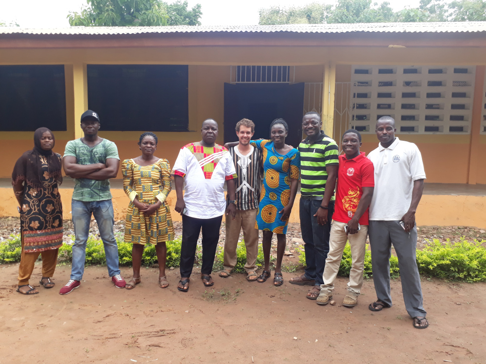

Prior to starting graduate school I served in Peace Corps Ghana as a secondary mathematics teacher. For two and a half years I taught in a small secondary school in rural Ghana. During my time there I was afforded the opportunity to work with many talented and passionate Ghanaians on several projects. We developed a computer laboratory for the students to learn ICT skills, constructed a bore-hole to improve access to clean water, and learned and shared with a girls club and women's group. Feel free to contact me to talk more about the experience.